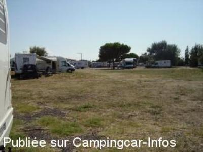
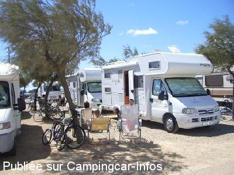
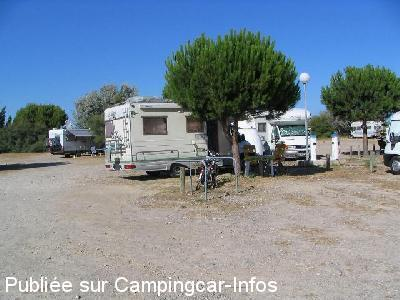
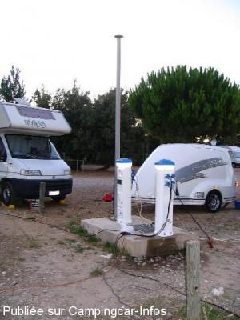

ASN = Aire de services avec stationnement nuit possible de :
GRUISSAN
(N° 747)
Accès/adresse :
D332
Etang de Mateille
11430 GRUISSAN
Etang de Mateille
11430 GRUISSAN
Latitude : (Nord) 43.12043° Décimaux ou 43° 7′ 13′′
Longitude : (Est) 3.11401° Décimaux ou 3° 6′ 50′′
Tarif : 2015
Stationnement, services : 9 €
Électricité : 1,50 €
Type de borne : Autre
Services :


Restauration
Douche sur la plage
Autres informations :
Ouvert du 01/07 au 31/08
150 emplacements sur aire gardée jour et nuit
24 branchements électricité
Proche de l'étang de Mateille
Tel Office du Tourisme : +33(0)468 490 900

Le 22/07/2012 par Gérard du 27

Le 13/08/2007 par triboulet

Le 12/08/2005 par pmsaml

Le 12/08/2005 par pmsaml
de
Rémy
le 24/08/2012 :
Grande aire, 170 places mais seulement 24 branchements électriques et ceux ci sont occupés presque uniquement par des saisonniers de la région et un grand camping car irlandais, dommage.
Seule bon point, stationnement possible sur la plage de l´étang de 7h à 21h, là il y a de la circulation d´air et les chaleurs estivales sont alors très supportables.
Les sanitaires laisse à désirer pour une aussi grande aire, 2 WC et 2 douches.
L´accueil lui aussi laisse à désirer.
Grande aire, 170 places mais seulement 24 branchements électriques et ceux ci sont occupés presque uniquement par des saisonniers de la région et un grand camping car irlandais, dommage.
Seule bon point, stationnement possible sur la plage de l´étang de 7h à 21h, là il y a de la circulation d´air et les chaleurs estivales sont alors très supportables.
Les sanitaires laisse à désirer pour une aussi grande aire, 2 WC et 2 douches.
L´accueil lui aussi laisse à désirer.
de
annick et bernard
le 05/08/2012 :
nous y sommes restes une nuit aire calme il est vrai que le stationnement est un peu anarchique mais il est difficile de trouver une sation balneaire avec 3 aires à notre disposition nous nous sommes baignes ds le lac sans probleme eau propre merci à la commune
nous y sommes restes une nuit aire calme il est vrai que le stationnement est un peu anarchique mais il est difficile de trouver une sation balneaire avec 3 aires à notre disposition nous nous sommes baignes ds le lac sans probleme eau propre merci à la commune
de
Anita Boulanger
le 04/08/2012 :
J'ai beaucoup apprécié cette aire. La proximité du parc d'attraction ne nuit absolument pas au calme de l'aire qui est très bien située : proche du supermarché, très proche de l'étang dans lequel il reste très agréable de se baigner. Encore plus intéressant, les campings caristes disposent de la possibilité de s'installer sur la grève de l'étang à seule condition de retourner sur l'aire dès 22 h. Merci à la commune de mettre cette aire à notre disposition.
J'ai beaucoup apprécié cette aire. La proximité du parc d'attraction ne nuit absolument pas au calme de l'aire qui est très bien située : proche du supermarché, très proche de l'étang dans lequel il reste très agréable de se baigner. Encore plus intéressant, les campings caristes disposent de la possibilité de s'installer sur la grève de l'étang à seule condition de retourner sur l'aire dès 22 h. Merci à la commune de mettre cette aire à notre disposition.
de
JMG
le 27/07/2012 :
Bonjour,
pas top mais, rend bien service...arrivé le 24/07/12 au matin, quelques places sont libres stationnement un peu anarchique...si vous avez besoin d'électricité...c'est pas ici qu'il faut aller...les branchement sont tous pris par des cc statiques...puisque l'on peu y rester 30 nuits consécutives...prix avec branchement electrique 9€,8€sans...de midi à midi...le ticket est valable sur l'aire des 4 vents et celle du chalet....
Bonjour,
pas top mais, rend bien service...arrivé le 24/07/12 au matin, quelques places sont libres stationnement un peu anarchique...si vous avez besoin d'électricité...c'est pas ici qu'il faut aller...les branchement sont tous pris par des cc statiques...puisque l'on peu y rester 30 nuits consécutives...prix avec branchement electrique 9€,8€sans...de midi à midi...le ticket est valable sur l'aire des 4 vents et celle du chalet....
de
Gérard du 27
le 22/07/2012 :
§
De passage le 9/7/2012, nous regrettons le stationnement anarchique des camping-cars. L'accueil est sympa, mais nous sommes parqués un peu comme des "nomades". Pas d'accès aux bornes électriques trop peu nombreuses. La proximité de la route est néfaste. Peu d'ombre et hygiène à revoir (emplacements, sanitaires). Il est vrai que l'on est près du lac, mais comment peut-on se baigner dans une eau aussi sale avec une plage aussi triste. A déconseiller (7.20 euros)
§
De passage le 9/7/2012, nous regrettons le stationnement anarchique des camping-cars. L'accueil est sympa, mais nous sommes parqués un peu comme des "nomades". Pas d'accès aux bornes électriques trop peu nombreuses. La proximité de la route est néfaste. Peu d'ombre et hygiène à revoir (emplacements, sanitaires). Il est vrai que l'on est près du lac, mais comment peut-on se baigner dans une eau aussi sale avec une plage aussi triste. A déconseiller (7.20 euros)
de
krauser vincent
le 09/08/2011 :
aire de la mateille est super,il faudrait juste y rajouter des bornes électriques,on y trouve toujours de la place et le personnel est super sympat.merci à la municipalité.
aire de la mateille est super,il faudrait juste y rajouter des bornes électriques,on y trouve toujours de la place et le personnel est super sympat.merci à la municipalité.
de
phil hansen
le 14/08/2010 :
De passage en août, c'était la seule aire de Gruissan où il restait des places. Aire un peu bruyante de par la proximité de la route. On stationne comme on veut ce qui génère une perte de places de plus de 30 %. L'accueil est sympathique et la proximité de l'étang est très agréable. Merci à la ville de Gruissan qui fait un gros effort pour accueillir les camping-caristes.
De passage en août, c'était la seule aire de Gruissan où il restait des places. Aire un peu bruyante de par la proximité de la route. On stationne comme on veut ce qui génère une perte de places de plus de 30 %. L'accueil est sympathique et la proximité de l'étang est très agréable. Merci à la ville de Gruissan qui fait un gros effort pour accueillir les camping-caristes.